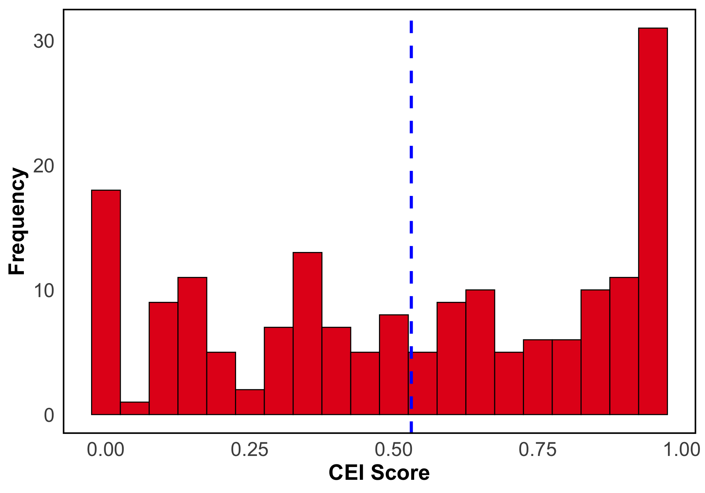
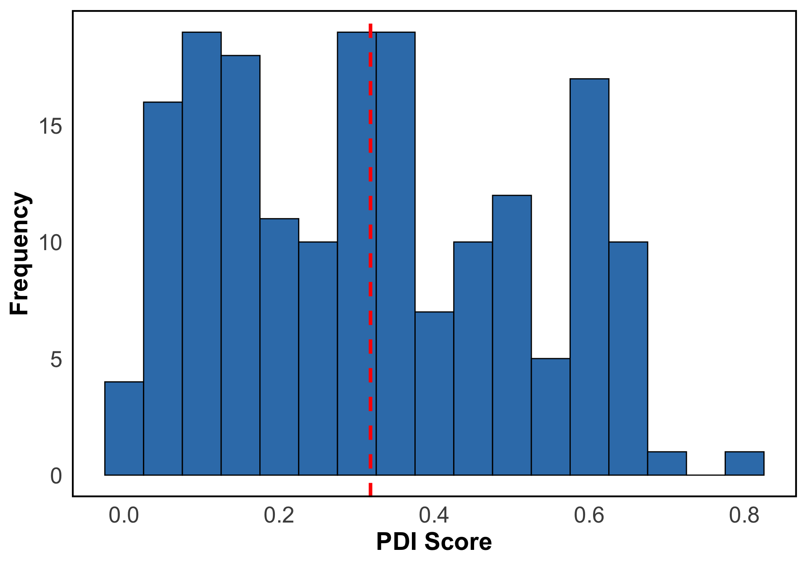
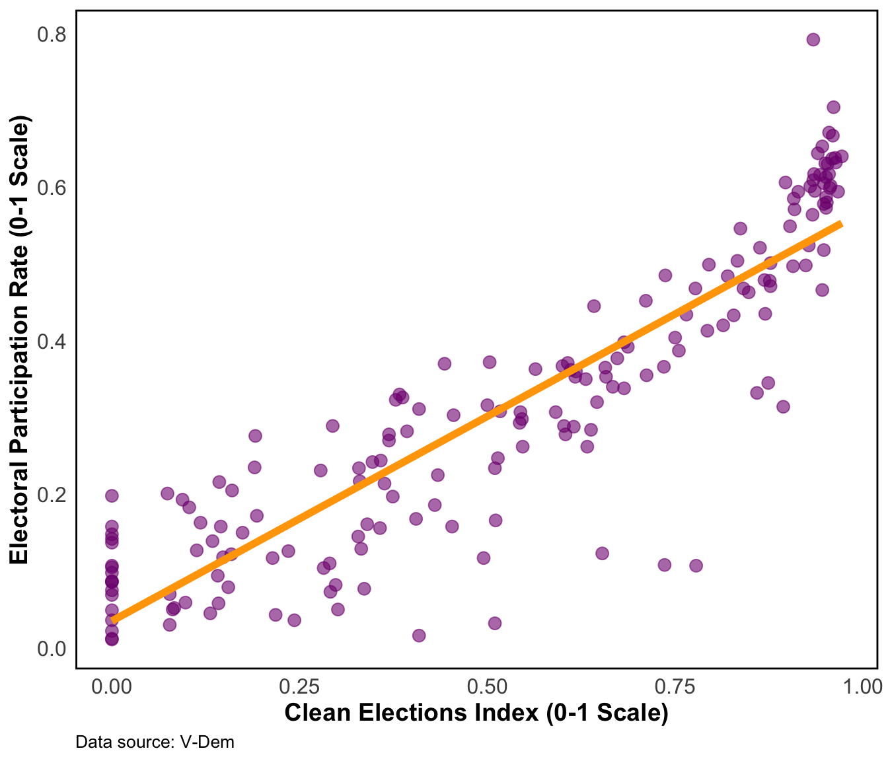

This study analyzes the relationship between electoral integrity and civic engagement in 179 countries using 2023 data from the Varieties of Democracy (V-Dem) project. It explores how fair elections correlate with citizen participation, providing insights that could influence democratic policies and strengthen global governance. The findings highlight the importance of electoral fairness in enhancing civic involvement.
Main Question: What is the correlation between electoral integrity and civic participation in 2023?
Hypothesis: We hypothesize a positive correlation, indicating that higher electoral integrity may be associated with increased civic engagement.
Purpose: This index evaluates the extent to which elections are conducted without fraud, coercion, or irregularities, ensuring that they are free and fair.
Relevance: A high score on this index indicates robust electoral processes, which are essential for legitimate governance.
Scale: The index ranges from 0 (least clean) to 1 (most clean).
| country_name | v2xel_frefair |
|---|---|
| Belgium | 0.972 |
| Spain | 0.967 |
| Estonia | 0.964 |
| Burma/Myanmar | 0.000 |
| Yemen | 0.000 |
| Haiti | 0.000 |
Purpose: This index measures the level of active participation by citizens in both electoral and non-electoral democratic processes.
Relevance: It reflects the extent to which democracies embrace direct involvement of citizens in governance, beyond traditional voting mechanisms.
Scale: The index ranges from 0 (low participation) to 1 (high participation).
| country_name | v2x_partipdem |
|---|---|
| Switzerland | 0.792 |
| Denmark | 0.704 |
| Uruguay | 0.671 |
| Eritrea | 0.011 |
| Afghanistan | 0.012 |
| Qatar | 0.016 |
The study utilizes 2023 data from the V-Dem dataset, employing linear regression analysis to investigate correlations between the Clean Elections Index and the Participatory Democracy Index.
The regression analysis reveals a clear and positive association between election integrity and citizen participation in democracy. An increase in the Clean Elections Index, indicating reduced electoral fraud and increased fairness, correlates with a rise in the Participatory Democracy Index, reflecting heightened citizen involvement in political activities. The positive and statistically significant coefficient for the Clean Elections Index underscores that transparent elections can stimulate greater democratic engagement. With 80% of the variation in citizen participation accounted for by this model, the robust relationship between electoral integrity and participatory democracy is evident. This underscores the vital role of election integrity in nurturing a democratic culture where citizens perceive their involvement in the democratic process as meaningful. It emphasizes the necessity for policymakers and electoral governance stakeholders to prioritize measures that bolster electoral integrity, as it can substantially amplify democratic engagement. However, the study’s limitations include the absence of controls for other variables that could influence this relationship.
| Dependent variable: | |
| Electoral Participation Index | |
| Clean Elections Index | .035** (.013) |
| v2xel_frefair | .533*** (.020) |
| Observations | 179 |
| R2 | .800 |
| Adjusted R2 | .799 |
| Note: | p<0.05; p<0.01; p<0.001 |

We express our sincere gratitude to the V-Dem Project and the V-Dem Institute for their invaluable data contributions to this study.